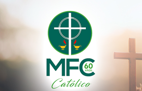

¡Feliz 60 Aniversario a toda la membresía!

El Espíritu Santo renueva y fortalece su Iglesia derramando Carismas en el pueblo de Dios. Hace 60 años en México se adoptó el Carisma de la espiritualidad conyugal y familiar como camino de santificación.
Si bien, el Movimiento Familiar Cristiano nace en Argentina en 1948 bajo la guía del Padre Pedro Richards, en 1958 algunos grupos matrimoniales mexicanos aceptan la idea de integrarse al Movimiento Familiar Cristiano en Latinoamérica, y así el 5 de Noviembre de 1958 se designa oficialmente el primer Equipo Coordinador Nacional mexicano.
En la actualidad, el MFC está presente en 87 diócesis de nuestro país, acompañando matrimonios, adolescentes, jóvenes y madres responsables de famlia. Adicionalmente ofrece diversos servicios como preparación inmediata al matrimonio, acompañamiento a divorciados vueltos a casar, formación para padres y preparación remota al matrimonio.
Celebramos con alegría el ser parte del plan de Dios y renovamos nuestro compromiso con la misión que nuestro movimiento tiene encomendada.